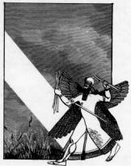

|
In ancient Mesopotamia the art of divination received more intense, sustained interest than in any other known civilization. Reading omens was particularly important since every event was thought to have a personal meaning to the observer. This attitude was scientific in that it stressed minute observation and description of phenomena. However causality was not an important notion -- all events were seen as communications from the divine. The Mesopotamians were specialists in the arts of prescience, predicting the future from the livers and intestines of slaughtered animals, from fire and smoke, and from the brilliancy of precious stones; they foretold events from the murmuring of springs and from the shape of plants. Trees spoke to them, as did serpents, "wisest of all animals." Monstrous births of animals and of men were believed to be portents, and dreams always found skillful interpreters. Atmospheric signs, rain, clouds, wind and lightening were interpreted as forebodings; the cracking of furniture and wooden panels foretold future events. Flies and other insects, as well as dogs, were the carriers of occult messages. Mesopotamia was noted throughout the ancient
world for its magi -- men and women for whom nothing was accidental. They
also saw a unity in nature and harmony in the universe which bound together
all objects and all events. The Assyrians made accurate observations of
stellar movements and developed mathematical formulas to predict heavenly
events. Omens were often interpreted through paranomastic relations --
puns and plays on word -- between the ominous portent and its consequence.
Dream Portents The idea is expressed in Mesopotamian literature, that the soul, or some part of it, moves out from the body of the sleeping person and actually visits the places and persons the dreamer sees" in his sleep. Sometimes the god of dreams is said to carry the dreamer.  Babylonian Winged God Marduk In times of crisis, ancient kings, priests, or heros would spend the night in the inner room of the sanctuary of a god. After due ritual preparation, the god would appear to the dreamer and give him a very clear and literal message which would require no further interpretation. The Assyrian king, Assurbanipal 668-626 B.C., recounted this incident in an ancient dream-book: The army saw the river Idid'e which was at that moment a raging torrent, and was afraid of crossing. But the goddess Ishtar who dwells in Arbela let my army have a dream in the midst of the night addressing them as follows: "I shall go in front of Assurbanipal, the king whom I have created myself." The army relied upon this dream and crossed safely the river Idid'e.This dream seems to have been reported simultaneously by many sleepers. Bad dreams dealing with sexual life or
tabooed relationships were thought of as diseases caused by evil demons
rising from the lower worlds to attack people. Their contents were rarely
mentioned for fear of causing increased entanglements. One intriguing technique
used to obviate the consequences of such a dream was a practice of telling
the dream to a lump of clay that is then dissolved in water.
References . A. Leo Oppenheim, "Mantic Dreams in the Ancient Near East," in G. E. Grunebaum & Roger Callois (eds.), The Dream and Human Societies. Berkeley: University of California Press, 1966. A volume touching on the psychological as well as sociological nature of dreams. . Kurt Seligman, Magic, Supernaturalism and Religion. New York: Random House, 1948, pp. 1-11. . Roger Callois, "Logical and Philosophical Problems of the Dream," in The Dream and Human Societies. |